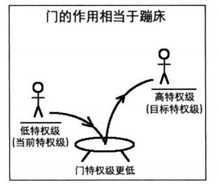
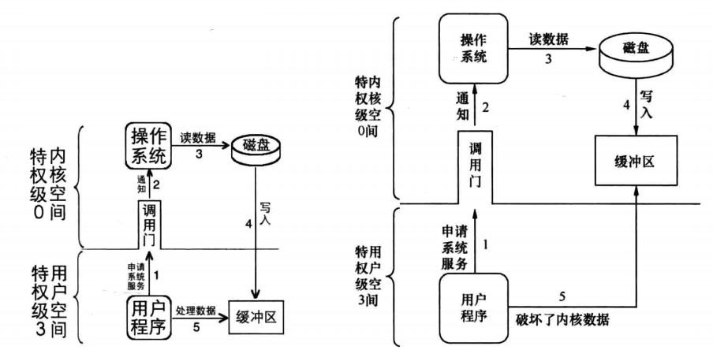

本节介绍内核加载和特权级相关内容。
内核加载
前面我们直接使用汇编语言编写代码，不过越是底层的语言，开发效率越低，后续开发内核大部分功能肯定还是要使用 C 语言，汇编语言编写代码编译后直接就是可执行二进制文件了，C 语言编写的代码却要经过编译、汇编到目标代码，然后由连接器链接后才变成可执行文件。如下代码：
int main(void){
while (1) ;
return 0;
}只对其编译和汇编成目标代码：
gcc -c -o main.o main.c
file main.o
#结果
main.o: ELF 64-bit LSB relocatable, x86-64, version 1 (SYSV), not stripped可以看到目标文件是可重定位文件，即其中的符号和函数的地址尚未确定。
nm main.o
#输出
0000000000000000 T main如果用 ld 命令链接后：
ld main.o -Ttext 0xc0001500 -e main -o kernel.bin
file kernel.bin
kernel.bin: ELF 64-bit LSB executable, x86-64, version 1 (SYSV), statically linked, not stripped
nm kernel.bin
00000000c0004000 R __bss_start
00000000c0004000 R _edata
00000000c0004000 R _end
00000000c0001500 T main
可以发现链接后 kernel.bin变成了可执行文件，且 main 有了相应地址。
二级制程序运行方法
前面的 mbr 和 loader 的地址都是硬编码在 0x7c00 和 0x900 处，那有没有一种灵活指定程序加载地址的方式呢？很容易想到，我们需要相应的数据结构描述要加载程序的元信息，比如入口地址、大小等。其实各种协议已经为我们指明了方向，如 http 协议，就是由消息头和消息体组成，消息头是元信息描述了请求方法、消息内容格式、消息大小等等，比如各种消息中间件的消息格式等都是按照这种方式实现。
所以我们也可以用同样的方式描述可执行文件，如下图所示：
elf格式
上面介绍的描述二进制文件的格式在linux下就是 elf。
elf header 数据类型如下：
/* Type for a 16-bit quantity. */
typedef uint16_t Elf32_Half;
typedef uint16_t Elf64_Half;
/* Types for signed and unsigned 32-bit quantities. */
typedef uint32_t Elf32_Word;
typedef int32_t Elf32_Sword;
typedef uint32_t Elf64_Word;
typedef int32_t Elf64_Sword;
/* Types for signed and unsigned 64-bit quantities. */
typedef uint64_t Elf32_Xword;
typedef int64_t Elf32_Sxword;
typedef uint64_t Elf64_Xword;
typedef int64_t Elf64_Sxword;
/* Type of addresses. */
typedef uint32_t Elf32_Addr;
typedef uint64_t Elf64_Addr;
/* Type of file offsets. */
typedef uint32_t Elf32_Off;
typedef uint64_t Elf64_Off;
/* Type for section indices, which are 16-bit quantities. */
typedef uint16_t Elf32_Section;
typedef uint16_t Elf64_Section;
/* Type for version symbol information. */
typedef Elf32_Half Elf32_Versym;
typedef Elf64_Half Elf64_Versym;
elf header 结构如下：
typedef struct
{
unsigned char e_ident[EI_NIDENT]; /* Magic number and other info */
Elf32_Half e_type; /* Object file type */
Elf32_Half e_machine; /* Architecture */
Elf32_Word e_version; /* Object file version */
Elf32_Addr e_entry; /* Entry point virtual address */
Elf32_Off e_phoff; /* Program header table file offset */
Elf32_Off e_shoff; /* Section header table file offset */
Elf32_Word e_flags; /* Processor-specific flags */
Elf32_Half e_ehsize; /* ELF header size in bytes */
Elf32_Half e_phentsize; /* Program header table entry size */
Elf32_Half e_phnum; /* Program header table entry count */
Elf32_Half e_shentsize; /* Section header table entry size */
Elf32_Half e_shnum; /* Section header table entry count */
Elf32_Half e_shstrndx; /* Section header string table index */
} Elf32_Ehdr;其中以下几个字节比较重要：
- Elf32_Addr e_entry; /* Entry point virtual address */ 程序入口虚拟地址
- Elf32_Off e_phoff; /* Program header table file offset */ 程序头表在文件内的字节偏移量
- Elf32_Half e_ehsize; /* ELF header size in bytes */
- Elf32_Half e_phentsize; /* Program header table entry size */每个条目的代谢即后面介绍的 struct Elf32_Phdr
- Elf32_Half e_phnum; /* Program header table entry count */
struct Elf32_Phdr 用来描述各个段的信息，其功能类似与 GDT 中段描述符。
/* Program segment header. */
typedef struct
{
Elf32_Word p_type; /* Segment type */
Elf32_Off p_offset; /* Segment file offset */
Elf32_Addr p_vaddr; /* Segment virtual address */
Elf32_Addr p_paddr; /* Segment physical address */
Elf32_Word p_filesz; /* Segment size in file */
Elf32_Word p_memsz; /* Segment size in memory */
Elf32_Word p_flags; /* Segment flags */
Elf32_Word p_align; /* Segment alignment */
} Elf32_Phdr;elf实例分析
为了查看 elf 的内部，可以使用 xxd 命令：
xxd -u -a -g l -s $2 -l $3 $1其中第一个参数为待查看文件名，第二个为文件的起始字节，第三个参数代表查看的长度。
有兴趣可以逐一分析，不过注意这里结果是 64 环境，所以应该对照 64 位系统的 elf。
将内核载入内存
磁盘规划如下图所示：
sudo gcc -c -o main.o main.c &&ld main.o -Ttext 0xc0001500 -e main -o kernel.bin && sudo dd if=kernel.bin of=/usr/local/bin/hd60M.img bs=512 count=200 seek=9 conv=notrunc接下来 loader.S 需要修改两个地方：
- 加载内核：将内核文件加载到内核缓冲区
- 初始化内核：分页后，将加载进来的 elf 内核文件放置到相应虚拟内存地址，然后跳过去执行
0x500~0x9fbff 可用内存分布图如下：
%include "boot.inc"
section loader vstart=LOADER_BASE_ADDR
;构建gdt及其内部的描述符
GDT_BASE: dd 0x00000000
dd 0x00000000
CODE_DESC: dd 0x0000FFFF
dd DESC_CODE_HIGH4
DATA_STACK_DESC: dd 0x0000FFFF
dd DESC_DATA_HIGH4
VIDEO_DESC: dd 0x80000007 ; limit=(0xbffff-0xb8000)/4k=0x7
dd DESC_VIDEO_HIGH4 ; 此时dpl为0
GDT_SIZE equ $ - GDT_BASE
GDT_LIMIT equ GDT_SIZE - 1
times 60 dq 0 ; 此处预留60个描述符的空位(slot)
SELECTOR_CODE equ (0x0001<<3) + TI_GDT + RPL0 ; 相当于(CODE_DESC - GDT_BASE)/8 + TI_GDT + RPL0
SELECTOR_DATA equ (0x0002<<3) + TI_GDT + RPL0 ; 同上
SELECTOR_VIDEO equ (0x0003<<3) + TI_GDT + RPL0 ; 同上
; total_mem_bytes用于保存内存容量,以字节为单位,此位置比较好记。
; 当前偏移loader.bin文件头0x200字节,loader.bin的加载地址是0x900,
; 故total_mem_bytes内存中的地址是0xb00.将来在内核中咱们会引用此地址
total_mem_bytes dd 0
;;;;;;;;;;;;;;;;;;;;;;;;;;;;;;;;;;;;;;;;;;;;;;;;;;;;
;以下是定义gdt的指针，前2字节是gdt界限，后4字节是gdt起始地址
gdt_ptr dw GDT_LIMIT
dd GDT_BASE
;人工对齐:total_mem_bytes4字节+gdt_ptr6字节+ards_buf244字节+ards_nr2,共256字节
ards_buf times 244 db 0
ards_nr dw 0 ;用于记录ards结构体数量
loader_start:
;------- int 15h eax = 0000E820h ,edx = 534D4150h ('SMAP') 获取内存布局 -------
xor ebx, ebx ;第一次调用时，ebx值要为0
mov edx, 0x534d4150 ;edx只赋值一次，循环体中不会改变
mov di, ards_buf ;ards结构缓冲区
.e820_mem_get_loop: ;循环获取每个ARDS内存范围描述结构
mov eax, 0x0000e820 ;执行int 0x15后,eax值变为0x534d4150,所以每次执行int前都要更新为子功能号。
mov ecx, 20 ;ARDS地址范围描述符结构大小是20字节
int 0x15
jc .e820_failed_so_try_e801 ;若cf位为1则有错误发生，尝试0xe801子功能
add di, cx ;使di增加20字节指向缓冲区中新的ARDS结构位置
inc word [ards_nr] ;记录ARDS数量
cmp ebx, 0 ;若ebx为0且cf不为1,这说明ards全部返回，当前已是最后一个
jnz .e820_mem_get_loop
;在所有ards结构中，找出(base_add_low + length_low)的最大值，即内存的容量。
mov cx, [ards_nr] ;遍历每一个ARDS结构体,循环次数是ARDS的数量
mov ebx, ards_buf
xor edx, edx ;edx为最大的内存容量,在此先清0
.find_max_mem_area: ;无须判断type是否为1,最大的内存块一定是可被使用
mov eax, [ebx] ;base_add_low
add eax, [ebx+8] ;length_low
add ebx, 20 ;指向缓冲区中下一个ARDS结构
cmp edx, eax ;冒泡排序，找出最大,edx寄存器始终是最大的内存容量
jge .next_ards
mov edx, eax ;edx为总内存大小
.next_ards:
loop .find_max_mem_area
jmp .mem_get_ok
;------ int 15h ax = E801h 获取内存大小,最大支持4G ------
; 返回后, ax cx 值一样,以KB为单位,bx dx值一样,以64KB为单位
; 在ax和cx寄存器中为低16M,在bx和dx寄存器中为16MB到4G。
.e820_failed_so_try_e801:
mov ax,0xe801
int 0x15
jc .e801_failed_so_try88 ;若当前e801方法失败,就尝试0x88方法
;1 先算出低15M的内存,ax和cx中是以KB为单位的内存数量,将其转换为以byte为单位
mov cx,0x400 ;cx和ax值一样,cx用做乘数
mul cx
shl edx,16
and eax,0x0000FFFF
or edx,eax
add edx, 0x100000 ;ax只是15MB,故要加1MB
mov esi,edx ;先把低15MB的内存容量存入esi寄存器备份
;2 再将16MB以上的内存转换为byte为单位,寄存器bx和dx中是以64KB为单位的内存数量
xor eax,eax
mov ax,bx
mov ecx, 0x10000 ;0x10000十进制为64KB
mul ecx ;32位乘法,默认的被乘数是eax,积为64位,高32位存入edx,低32位存入eax.
add esi,eax ;由于此方法只能测出4G以内的内存,故32位eax足够了,edx肯定为0,只加eax便可
mov edx,esi ;edx为总内存大小
jmp .mem_get_ok
;----------------- int 15h ah = 0x88 获取内存大小,只能获取64M之内 ----------
.e801_failed_so_try88:
;int 15后，ax存入的是以kb为单位的内存容量
mov ah, 0x88
int 0x15
jc .error_hlt
and eax,0x0000FFFF
;16位乘法，被乘数是ax,积为32位.积的高16位在dx中，积的低16位在ax中
mov cx, 0x400 ;0x400等于1024,将ax中的内存容量换为以byte为单位
mul cx
shl edx, 16 ;把dx移到高16位
or edx, eax ;把积的低16位组合到edx,为32位的积
add edx,0x100000 ;0x88子功能只会返回1MB以上的内存,故实际内存大小要加上1MB
.mem_get_ok:
mov [total_mem_bytes], edx ;将内存换为byte单位后存入total_mem_bytes处。
;----------------- 准备进入保护模式 -------------------
;1 打开A20
;2 加载gdt
;3 将cr0的pe位置1
;----------------- 打开A20 ----------------
in al,0x92
or al,0000_0010B
out 0x92,al
;----------------- 加载GDT ----------------
lgdt [gdt_ptr]
;----------------- cr0第0位置1 ----------------
mov eax, cr0
or eax, 0x00000001
mov cr0, eax
jmp dword SELECTOR_CODE:p_mode_start ; 刷新流水线，避免分支预测的影响,这种cpu优化策略，最怕jmp跳转，
; 这将导致之前做的预测失效，从而起到了刷新的作用。
.error_hlt: ;出错则挂起
hlt
[bits 32]
p_mode_start:
mov ax, SELECTOR_DATA
mov ds, ax
mov es, ax
mov ss, ax
mov esp,LOADER_STACK_TOP
mov ax, SELECTOR_VIDEO
mov gs, ax
; ------------------------- 加载kernel ----------------------
mov eax, KERNEL_START_SECTOR ; kernel.bin所在的扇区号
mov ebx, KERNEL_BIN_BASE_ADDR ; 从磁盘读出后，写入到ebx指定的地址
mov ecx, 200 ; 读入的扇区数
call rd_disk_m_32
; 创建页目录及页表并初始化页内存位图
call setup_page
;要将描述符表地址及偏移量写入内存gdt_ptr,一会用新地址重新加载
sgdt [gdt_ptr] ; 存储到原来gdt所有的位置
;将gdt描述符中视频段描述符中的段基址+0xc0000000
mov ebx, [gdt_ptr + 2]
or dword [ebx + 0x18 + 4], 0xc0000000 ;视频段是第3个段描述符,每个描述符是8字节,故0x18。
;段描述符的高4字节的最高位是段基址的31~24位
;将gdt的基址加上0xc0000000使其成为内核所在的高地址
add dword [gdt_ptr + 2], 0xc0000000
add esp, 0xc0000000 ; 将栈指针同样映射到内核地址
; 把页目录地址赋给cr3
mov eax, PAGE_DIR_TABLE_POS
mov cr3, eax
; 打开cr0的pg位(第31位)
mov eax, cr0
or eax, 0x80000000
mov cr0, eax
;在开启分页后,用gdt新的地址重新加载
lgdt [gdt_ptr] ; 重新加载
;;;;;;;;;;;;;;;;;;;;;;;;;;;; 此时不刷新流水线也没问题 ;;;;;;;;;;;;;;;;;;;;;;;;
;由于一直处在32位下,原则上不需要强制刷新,经过实际测试没有以下这两句也没问题.
;但以防万一，还是加上啦，免得将来出来莫句奇妙的问题.
jmp SELECTOR_CODE:enter_kernel ;强制刷新流水线,更新gdt
enter_kernel:
;;;;;;;;;;;;;;;;;;;;;;;;;;;;;;;;;;;;;;;;;;;;;;;;;;;;;;;;;;;;;;;;;;;;;;;;;;;;;;;;
call kernel_init
mov esp, 0xc009f000
jmp KERNEL_ENTRY_POINT ; 用地址0x1500访问测试，结果ok
;----------------- 将kernel.bin中的segment拷贝到编译的地址 -----------
kernel_init:
xor eax, eax
xor ebx, ebx ;ebx记录程序头表地址
xor ecx, ecx ;cx记录程序头表中的program header数量
xor edx, edx ;dx 记录program header尺寸,即e_phentsize
mov dx, [KERNEL_BIN_BASE_ADDR + 42] ; 偏移文件42字节处的属性是e_phentsize,表示program header大小
mov ebx, [KERNEL_BIN_BASE_ADDR + 28] ; 偏移文件开始部分28字节的地方是e_phoff,表示第1 个program header在文件中的偏移量
; 其实该值是0x34,不过还是谨慎一点，这里来读取实际值
add ebx, KERNEL_BIN_BASE_ADDR
mov cx, [KERNEL_BIN_BASE_ADDR + 44] ; 偏移文件开始部分44字节的地方是e_phnum,表示有几个program header
.each_segment:
cmp byte [ebx + 0], PT_NULL ; 若p_type等于 PT_NULL,说明此program header未使用。
je .PTNULL
;为函数memcpy压入参数,参数是从右往左依然压入.函数原型类似于 memcpy(dst,src,size)
push dword [ebx + 16] ; program header中偏移16字节的地方是p_filesz,压入函数memcpy的第三个参数:size
mov eax, [ebx + 4] ; 距程序头偏移量为4字节的位置是p_offset
add eax, KERNEL_BIN_BASE_ADDR ; 加上kernel.bin被加载到的物理地址,eax为该段的物理地址
push eax ; 压入函数memcpy的第二个参数:源地址
push dword [ebx + 8] ; 压入函数memcpy的第一个参数:目的地址,偏移程序头8字节的位置是p_vaddr，这就是目的地址
call mem_cpy ; 调用mem_cpy完成段复制
add esp,12 ; 清理栈中压入的三个参数
.PTNULL:
add ebx, edx ; edx为program header大小,即e_phentsize,在此ebx指向下一个program header
loop .each_segment
ret
;---------- 逐字节拷贝 mem_cpy(dst,src,size) ------------
;输入:栈中三个参数(dst,src,size)
;输出:无
;---------------------------------------------------------
mem_cpy:
cld
push ebp
mov ebp, esp
push ecx ; rep指令用到了ecx，但ecx对于外层段的循环还有用，故先入栈备份
mov edi, [ebp + 8] ; dst
mov esi, [ebp + 12] ; src
mov ecx, [ebp + 16] ; size
rep movsb ; 逐字节拷贝
;恢复环境
pop ecx
pop ebp
ret
;------------- 创建页目录及页表 ---------------
setup_page:
;先把页目录占用的空间逐字节清0
mov ecx, 4096
mov esi, 0
.clear_page_dir:
mov byte [PAGE_DIR_TABLE_POS + esi], 0
inc esi
loop .clear_page_dir
;开始创建页目录项(PDE)
.create_pde: ; 创建Page Directory Entry
mov eax, PAGE_DIR_TABLE_POS
add eax, 0x1000 ; 此时eax为第一个页表的位置及属性
mov ebx, eax ; 此处为ebx赋值，是为.create_pte做准备，ebx为基址。
; 下面将页目录项0和0xc00都存为第一个页表的地址，
; 一个页表可表示4MB内存,这样0xc03fffff以下的地址和0x003fffff以下的地址都指向相同的页表，
; 这是为将地址映射为内核地址做准备
or eax, PG_US_U | PG_RW_W | PG_P ; 页目录项的属性RW和P位为1,US为1,表示用户属性,所有特权级别都可以访问.
mov [PAGE_DIR_TABLE_POS + 0x0], eax ; 第1个目录项,在页目录表中的第1个目录项写入第一个页表的位置(0x101000)及属性(3)
mov [PAGE_DIR_TABLE_POS + 0xc00], eax ; 一个页表项占用4字节,0xc00表示第768个页表占用的目录项,0xc00以上的目录项用于内核空间,
; 也就是页表的0xc0000000~0xffffffff共计1G属于内核,0x0~0xbfffffff共计3G属于用户进程.
sub eax, 0x1000
mov [PAGE_DIR_TABLE_POS + 4092], eax ; 使最后一个目录项指向页目录表自己的地址
;下面创建页表项(PTE)
mov ecx, 256 ; 1M低端内存 / 每页大小4k = 256
mov esi, 0
mov edx, PG_US_U | PG_RW_W | PG_P ; 属性为7,US=1,RW=1,P=1
.create_pte: ; 创建Page Table Entry
mov [ebx+esi*4],edx ; 此时的ebx已经在上面通过eax赋值为0x101000,也就是第一个页表的地址
add edx,4096
inc esi
loop .create_pte
;创建内核其它页表的PDE
mov eax, PAGE_DIR_TABLE_POS
add eax, 0x2000 ; 此时eax为第二个页表的位置
or eax, PG_US_U | PG_RW_W | PG_P ; 页目录项的属性RW和P位为1,US为0
mov ebx, PAGE_DIR_TABLE_POS
mov ecx, 254 ; 范围为第769~1022的所有目录项数量
mov esi, 769
.create_kernel_pde:
mov [ebx+esi*4], eax
inc esi
add eax, 0x1000
loop .create_kernel_pde
ret
;-------------------------------------------------------------------------------
;功能:读取硬盘n个扇区
rd_disk_m_32:
;-------------------------------------------------------------------------------
; eax=LBA扇区号
; ebx=将数据写入的内存地址
; ecx=读入的扇区数
mov esi,eax ; 备份eax
mov di,cx ; 备份扇区数到di
;读写硬盘:
;第1步：设置要读取的扇区数
mov dx,0x1f2
mov al,cl
out dx,al ;读取的扇区数
mov eax,esi ;恢复ax
;第2步：将LBA地址存入0x1f3 ~ 0x1f6
;LBA地址7~0位写入端口0x1f3
mov dx,0x1f3
out dx,al
;LBA地址15~8位写入端口0x1f4
mov cl,8
shr eax,cl
mov dx,0x1f4
out dx,al
;LBA地址23~16位写入端口0x1f5
shr eax,cl
mov dx,0x1f5
out dx,al
shr eax,cl
and al,0x0f ;lba第24~27位
or al,0xe0 ; 设置7～4位为1110,表示lba模式
mov dx,0x1f6
out dx,al
;第3步：向0x1f7端口写入读命令，0x20
mov dx,0x1f7
mov al,0x20
out dx,al
;;;;;;; 至此,硬盘控制器便从指定的lba地址(eax)处,读出连续的cx个扇区,下面检查硬盘状态,不忙就能把这cx个扇区的数据读出来
;第4步：检测硬盘状态
.not_ready: ;测试0x1f7端口(status寄存器)的的BSY位
;同一端口,写时表示写入命令字,读时表示读入硬盘状态
nop
in al,dx
and al,0x88 ;第4位为1表示硬盘控制器已准备好数据传输,第7位为1表示硬盘忙
cmp al,0x08
jnz .not_ready ;若未准备好,继续等。
;第5步：从0x1f0端口读数据
mov ax, di ;以下从硬盘端口读数据用insw指令更快捷,不过尽可能多的演示命令使用,
;在此先用这种方法,在后面内容会用到insw和outsw等
mov dx, 256 ;di为要读取的扇区数,一个扇区有512字节,每次读入一个字,共需di*512/2次,所以di*256
mul dx
mov cx, ax
mov dx, 0x1f0
.go_on_read:
in ax,dx
mov [ebx], ax
add ebx, 2
; 由于在实模式下偏移地址为16位,所以用bx只会访问到0~FFFFh的偏移。
; loader的栈指针为0x900,bx为指向的数据输出缓冲区,且为16位，
; 超过0xffff后,bx部分会从0开始,所以当要读取的扇区数过大,待写入的地址超过bx的范围时，
; 从硬盘上读出的数据会把0x0000~0xffff的覆盖，
; 造成栈被破坏,所以ret返回时,返回地址被破坏了,已经不是之前正确的地址,
; 故程序出会错,不知道会跑到哪里去。
; 所以改为ebx代替bx指向缓冲区,这样生成的机器码前面会有0x66和0x67来反转。
; 0X66用于反转默认的操作数大小! 0X67用于反转默认的寻址方式.
; cpu处于16位模式时,会理所当然的认为操作数和寻址都是16位,处于32位模式时,
; 也会认为要执行的指令是32位.
; 当我们在其中任意模式下用了另外模式的寻址方式或操作数大小(姑且认为16位模式用16位字节操作数，
; 32位模式下用32字节的操作数)时,编译器会在指令前帮我们加上0x66或0x67，
; 临时改变当前cpu模式到另外的模式下.
; 假设当前运行在16位模式,遇到0X66时,操作数大小变为32位.
; 假设当前运行在32位模式,遇到0X66时,操作数大小变为16位.
; 假设当前运行在16位模式,遇到0X67时,寻址方式变为32位寻址
; 假设当前运行在32位模式,遇到0X67时,寻址方式变为16位寻址.
loop .go_on_read
ret
上面内存拷贝函数模拟了 memcpy 函数，对应的栈如下图所示：
特权级深入浅出
保护模式的保护主要提现在特权级上，操作系统作为各种计算机资源的管理者，各种各样的第三方程序都会运行在它提供的环境中，为了保证系统的可持续、安全的运行，就要防止恶意程序破坏系统资源。CPU 在这方面为我们从硬件上提供了支持，程序拥有的权限被分成0、1、2、3级，0级最大，3级最小类似一个特权级环：

TSS
TSS 是为了在 CPU 内部为了支持多任务的实现方式，如下图示：
可以看到 TSS 有 3 个栈 ss0、esp0、ss1、esp1、ss2、esp2 ，这些栈就是为了任务切换时使用，可以想象，在发送任务切换时，CPU 有可能从低特权级跑到高特权级执行，总不能使用同一个栈吧？所以，不同特权级使用的栈是不一样的。
特权级转移分为两类，一类是由中断门、调用门等使低特权级转向高特权级，另一类则由调用返回指令从高特权级转向低特权级。
CPL 和 DPL
对于 CPU 来说任何访问无外乎数据和指令，而在 x86 架构中内存访问是基于段的，所以位于选择子中的RPL 以及描述符中的DPL就至关重要了。CPL即转移后的DPL，CPL代表当前的特权级，而DPL代表受访者的特权级。
- 对于受访者为数据段（代码段描述符type字段未有X执行属性），则只有访问者权限大于受访者 DPL，才能访问。
- 对于受访者为代码段，则只有访问者权限等于受访者DPL才能访问，即平级访问。你可能想为什么不能降级访问？试想如果能降级访问，CPU在高权限级别时，可能被低权限级别代码引导执行恶意代码。
- 低权限级别难道不能提升权限吗？通过一致性代码，可以从低权限级别暂时提升至高权限，即满足数值上，CPL>=一致性代码段的DPL，不过转移后特权级保持不变，所以这种权限提升本质上只是跑到特权级更高的代码段执行指令。常用与数学库的调用。
门、调用门和RPL
由于常用的系统调用如磁盘读写、网络服务等都在高特权级，用户代码要使用这些功能该怎么办？答案是通过门结构：
从上面可以看出，门描述符有三个东西值得注意：
- 选择子，这里选择子选择的是GDT、LDT和IDT里面内容。
- 偏移量，通过选择子确定了段描述符后，还要偏移量才能确定最终的程序地址
- DPL，门描述符里面也有DPL，而选择子对应的 GDT 段描述符也有 DPL。
门的作用就是让低权限能够转移到高权限，不过访问者权限至少得大于门的DPL，所以满足的条件是：
DPL_GATE>=CPL>=DPL_CODE （即访问者 CPL权限至少大于等于门DPL，CPL权限小于目标代码段DPL）通过门实现了“蹦床”的功能：

门的调用过程如下：
调用门的过程保护
门调用涉及两个特权级，所以CPU 可能需要不同的栈，刚刚讲了混用同一个栈，会带来混乱。
在门调用过程中，除了特权级的检测外，如果涉及到低特权级向高特权级转移，除了将CS和EIP入栈，还需要将 SS和ESP入栈。如下图示：
当处理器执行retf指令返回时，需要回复CS和EIP，以及SS和ESP，同样也要进行特权级检测。
注意：如果返回时需要改变特权级，将检测DS、ES、FS、GS内容，如果某个寄存器选择子指向的数据段描述符的DPL权限比返回后的CPL（CS.RPL）高，则处理器将 0 填充到相应的段寄存器。
因为段寄存器填充 0 会触发异常，这样就可以避免恶意操作。
RPL
其实特权级最容易混淆的地方就在于 RPL，网上很多文章都没有解释清楚，通过例子就很容易说明白。假设系统调用 syswrite，其定义如下：
syswrite(LBA,selector,offset);将LBA地址的内容写入到选择子位selector，偏移量为offset的内存位置如果仅仅靠刚刚说的公式：DPL_GATE>=CPL>=DPL_CODE ，显然是满足的，当CPU从用户空间陷入内核后，其CPL变成 0 ，现在任意代码和内存位置CPU都是可以执行和访问的，假设恶意用户把selector 和offset 设置到内核区，那么该系统调用将会破坏系统内核！！这种现象叫做privilege escalation vulnerability过程如下：

问题出在哪儿呢？其实很简单，我们需要标识谁才是真正的请求者，即RPL。RPL 可能是真正运行的程序，也可能不是，比如上面的系统调用，RPL 是用户程序。这样一来，在作特权级检测时就需要考虑 RPL了。
对数据段的访问
对数据段（DS, ES, FS, GS, SS）的访问要作如下检测：
- The CPL (current privilege level).
- The RPL (requestor’s privilege level) of the selector used to specify the target segment.
- The DPL of the descriptor of the target segment.
数值上，CPL<=DPL&&RPL<=DPL
对代码段的访问
- Load a data-segment register with a selector of a nonconforming, readable, executable segment.
- Load a data-segment register with a selector of a conforming, readable, executable segment.
- Use a CS override prefix to read a readable, executable segment whose selector is already loaded in the CS register.
The same rules as for access to data segments apply to case 1. Case 2 is always valid because the privilege level of a segment whose conforming bit is set is effectively the same as CPL regardless of its DPL. Case 3 always valid because the DPL of the code segment in CS is, by definition, equal to CPL.
涉及到代码段转移的只有 JMP, CALL, RET, INT, and IRET指令，针对没有使用门结构的情况会检测如下项：
- The CPL (current privilege level).
- The DPL of the descriptor of the target segment.
JMP 或 CALL 必须满足如下条件，注意（在非一致性代码下，JMP只能平级转移）：
DPL of the target is equal to CPL.
The conforming bit of the target code-segment descriptor is set, and the DPL of the target is less than or equal to CPL.
如果涉及到门调用情况下，权限验证会涉及一下项目：
- The CPL (current privilege level).
- The RPL (requestor’s privilege level) of the selector used to specify the call gate.
- The DPL of the gate descriptor.
- The DPL of the descriptor of the target executable segment.
For a JMP instruction to a nonconforming segment, both of the following privilege rules must be satisfied; otherwise, a general protection exception results.
- MAX (CPL,RPL) <= gate DPL
- target segment DPL = CPL
For a CALL instruction (or for a JMP instruction to a conforming segment), both of the following privilege rules must be satisfied; otherwise, a general protection exception results.
- MAX (CPL,RPL) <= gate DPL
- target segment DPL <= CPL
注意点
- RPL 是历史遗留产物，以前内存访问需要通过多个段切换，而现在都是平坦模型，操作系统会定义一个代码段和内存段给所有程序共享使用。
- RPL 不是必须的，其实当我们系统调用时，操作系统能够通过入栈的 CS 找到对应的特权级，进而进行特权级检测，不过通过RPL更加优雅，对应系统调用中的 RPL 会被强制设置为CPL对应的权限，CPU 提供了专门的指令修改 RPL，用户即使设置高权限的 RPL 也不能欺骗系统。
- 现在操作系统都是通过页表访问，所以特权级检查也会在页上进行。
- CPU 的某些指令也是分特权级的，比如停机指令只能在最高特权级执行。
IO特权级
保护模式下，处理器的特权级不仅体现在数据和代码访问，还体现在指令以及IO访问中。寄存器的 IOPL 位就是IO特权级，每个任务都有 eflags ，只要数值上CPL<=IOPL ，就可以访问所有 IO 端口，注意是所有端口。那么如果想控制部分端口开放情况咋办呢？毕竟不能所有检查都通过 CPU ，这就有了 IO 图。
Intel处理器最大支持 65536 个端口，通过 TSS的 IO图可以控制部分端口打开情况，为什么图中左上角为 oxFF呢？原因有二：
- 第一，处理器允许IO图不映射所有端口，即 IO图长度不足 8KB，最后一个字节为
0xFF刚好可以充当边界的作用。 - 第二，由于从一个端口读多个字节，实际上是同时读了连续的多个端口，所以
0xFF可以避免越界访问。